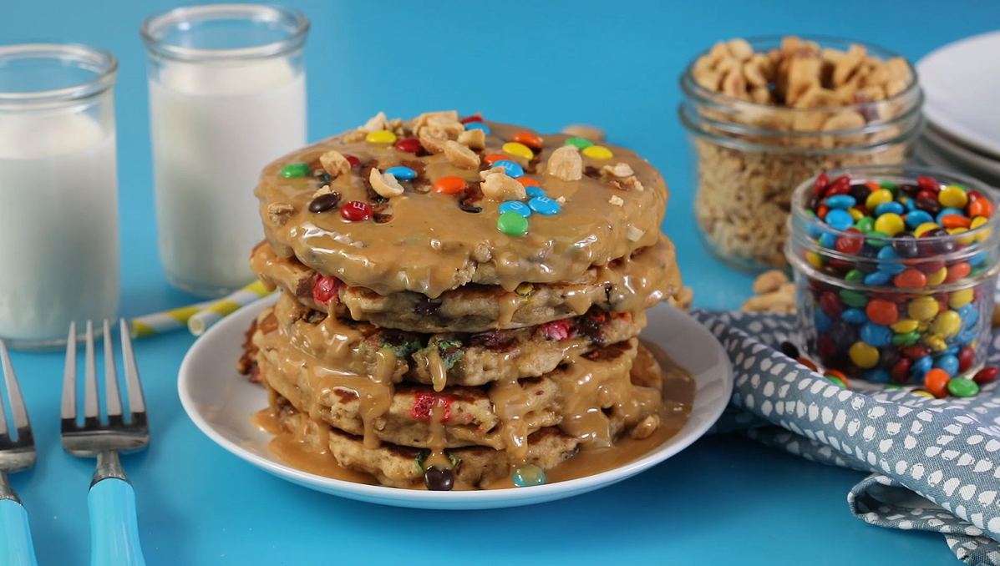

Monster Cookie Pancakes

Description
Cookies. Candy. Pancakes... Monsters?
Sounds good to me!
Ingrediants
Pancakes
- 1 cup all-purpose flour
- ½ cup quick-cooking oats
- 3 tablespoons brown sugar
- 1 teaspoon baking powder
- ½ teaspoon baking soda
- ½ teaspoon sea salt
- ⅛ teaspoon ground cinnamon, or to taste
- ½ cup peanut butter
- ¼ cup butter
- 1 ⅓ cups buttermilk
- 1 large egg
- ⅓ cup chocolate chips
Peanut Butter Sauce
- ¼ cup peanut butter
- ¼ cup butter
- ¼ cup confectioners sugar, or more to taste
- ⅛ teaspoon sea salt
- cooking spray
- ⅓ cup candy-coated milk chocolate pieces (such as M&M's®)
Steps
- Combine flour, oats, brown sugar, baking powder, baking soda, 1/2 teaspoon salt, and cinnamon in a large bowl.
- Melt 1/2 cup peanut butter and 1/4 cup butter together in a large microwave-safe liquid measuring cup in the microwave for 30 seconds. Whisk in buttermilk and egg. Add to flour mixture; stir just until combined. Fold chocolate chips gently into batter; allow to rest for 5 minutes.
- Make the peanut butter sauce by melting 1/4 cup peanut butter and 1/4 cup butter together in a large microwave-safe liquid measuring cup in the microwave for 30 seconds. Whisk in confectioners' sugar and 1/8 teaspoon salt.
- Heat a large nonstick skillet over low heat; coat with cooking spray. Pour in 1/3 cup batter; spread with the back of a spoon into a circle just over 1/4-inch thick. Sprinkle with candy-coated chocolate pieces. Cook until edges are set; 2 to 3 minutes. Flip and cook 1 to 2 minutes more. Transfer to a plate; top with peanut butter sauce and more chocolate candies.